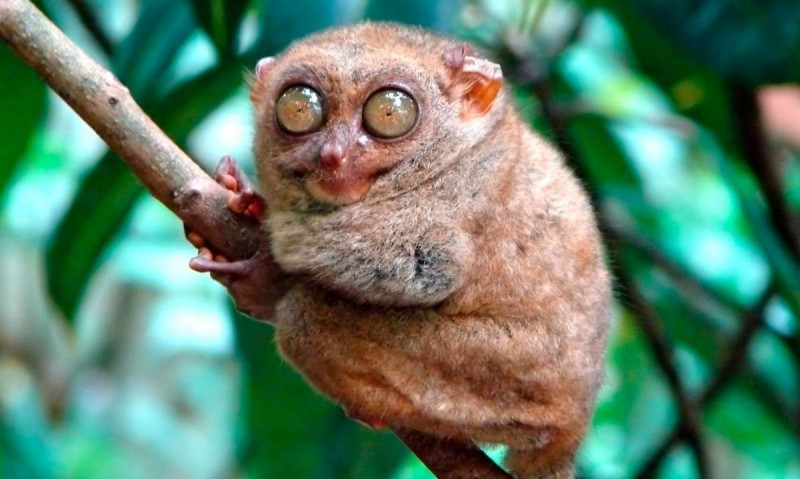

El tarsero fantasma o tarsio fantasma (Tarsius tarsier) es una especie de primate tarsiforme, constituye la especie tipo del género Tarsius. Son primates de hábitos sociales nocturnos, viven en grupos pequeños de 2 a 6 individuos. Además Poseen enormes ojos, pies alargados y cuerpo pequeño, sus hábitos se definen como nocturnos y solitarios, y en muchas de las regiones donde habitan los consideraban demonios sin embargo u hábitat se ha visto muy amenazado y reducido. Actualmente, su distribución se restringe a Indonesia, en el Sudeste Asiático, concretamente en las islas Célebes y circundantes e Islas Togian.
El extraño aspecto de este animal, le han hecho acreedor de infinidad de leyendas y supersiticiones entre los indígenas. Es el "espectro" (de ahí su nombre científico), "El espíritu del bosque"
Los tarseros son animales nocturnos y duermen durante el día en los matorrales. Durante la noche van en busca de comida, se mueven verticalmente y saltan. La mayoría de ellos se encuentran en las partes más bajas de los árboles, rara vez alcanzan los dos metros de altura.
Aqui ofrezcemos una colección de fotos del animal para los curiosos:
Fotos del mono tarseroTaxonomia
Características
El animal
